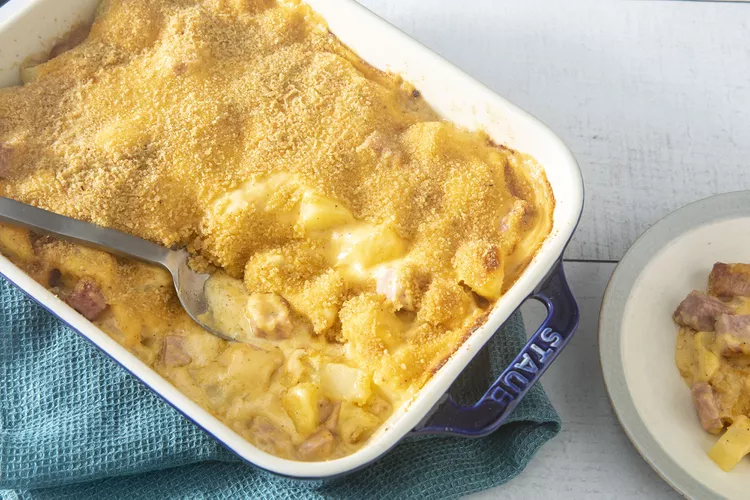

Potato Casserole

Description
Decadently cheesy, crispy, and hearty ham and potato casserole makes for the perfect bite any time of day. This simple, pantry-friendly recipe will win over even the pickiest of eaters with its bold savory flavor. You'll never look at leftovers the same way again — try this top-rated casserole recipe for a delightfully creamy dish that the entire family will enjoy.
Ingredients
- 6 small potatoes, peeled and cut into 1/2-inch cubes
- 7 tablespoons butter, divided
- ⅔ pound leftover cooked ham, cut into 1/2-inch cubes
- 1 small onion, finely chopped
- 3 tablespoons all-purpose flour
- 1 ½ cups milk
- salt and ground black pepper to taste
- 1 (8 ounce) package shredded Cheddar cheese
- ¼ cup bread crumbs
Steps
-
Step 1
Place potatoes into a large pot and cover with salted water; bring to a boil. Reduce heat to medium-low and simmer until tender, 10 to 15 minutes.
-
Step 2
Meanwhile, preheat the oven to 350 degrees F (175 degrees C). Grease a 1 1/2-quart baking dish.
-
Step 3
When the potatoes are almost finished, melt 3 tablespoons butter in a skillet over medium heat. Add ham and onion; cook and stir until the onion has softened and turned translucent, about 5 minutes. Remove from the heat.
-
Step 4
Drain potatoes; add to the ham mixture and stir to combine. Transfer to the prepared baking dish.
-
Step 5
Melt remaining 4 tablespoons butter in a saucepan over medium heat. Whisk in flour and stir until the mixture becomes paste-like and light golden brown, about 5 minutes.
-
Step 6
Gradually whisk milk into the flour mixture; season with salt and black pepper. Continue cooking and stirring until thickened, about 2 minutes. Reduce heat to medium-low and stir in Cheddar cheese until melted.
-
Step 7
Pour cheese sauce over ham and potatoes. Sprinkle bread crumbs over top.
-
Step 8
Bake in the preheated oven until sauce is bubbly and browned, 25 to 30 minutes.